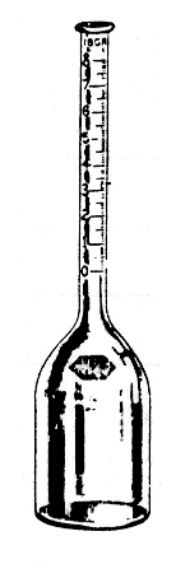

開卷有益 ／
藥師 ／ 藥物分析與生藥學 ／ 103 年第 2 次103 年第 2 次藥師藥物分析與生藥學試題與答案
這一頁是民國 103 年第 2 次藥師藥物分析與生藥學的整份歷屆試題，共 80 題，題目與標準答案出自考選部「國家考試試題及測驗式試題答案」開放資料，其中 75 題附有詳解。以下逐題列出題幹、選項與答案；要計時作答或記錄成績，請用線上練習。
考選部原始場次代碼：103090
線上作答這一科 →
全部 80 題
第 1 題
同一樣品其分析方法，於不同分析者，不同實驗室下，其結果之再現性（reproducibility）的 程度是為：
（A） 精密度（Precision）（B） 準確度（Accuracy）（C） 牢靠性（Ruggedness）（D） 專一性（Specificity）答案：（C）
詳解與考點 正解：同一方法在不同分析者、不同實驗室的正常變動下，仍能維持結果再現性的能力稱為 ruggedness；題幹所列兩種變動正是此驗證概念的範圍。故選 C。
A：Precision 是重複量測結果彼此接近的程度，通常著重同一條件下的變異，不能完整涵蓋跨分析者與跨實驗室的考法。
B：Accuracy 是測定值接近真值或公認參考值的程度，問的是偏差大小而不是條件改變後能否重現。
D：Specificity 是方法在共存成分下只測得目標分析物的能力，重點在干擾排除，不在不同實驗環境的再現性。
本題考點：方法牢靠性（ruggedness）——分析者、儀器或實驗室改變時，判斷方法能否維持可接受結果；精密度與準確度（precision/accuracy）——前者看重複結果的散布，後者看與真值的接近，兩者都不是跨條件設計的名稱。
第 2 題
下列有關錠劑中主要藥物成分萃取之敘述，何者錯誤？
（A） 充填料如乳糖、澱粉等對HPLC之UV檢測器幾無干擾（B） 有機金屬色素不吸收紫外光—可見光，易溶於水（C） 著衣劑如羥丙基甲基纖維素（hydroxypropylmethylcellulose），不吸收紫外光（D） 潤滑劑如硬脂酸等發色基團薄弱，干擾性小答案：（B）
詳解與考點 正解：以 HPLC-UV 分析錠劑萃取液時，要判斷賦形劑是否具有可吸收的 chromophore 及其溶解性；（B）有機金屬色素通常正因具有顏色而吸收 UV-visible 光，且多不易溶於水，兩項敘述皆反向。故選 B。
A：Lactose、澱粉等充填料通常缺乏強 UV chromophore，在適當萃取與波長下對 HPLC-UV 的干擾很小，這是它看似寬鬆但可成立的原因。
C：Hydroxypropylmethylcellulose 的結構沒有強共軛發色基團，在一般 UV 偵測條件下吸收有限，故不是題幹所問的錯誤敘述。
D：硬脂酸等潤滑劑的強 UV 發色性低，經適當樣品前處理後通常干擾較小。
本題考點：紫外偵測干擾（UV detection interference）——先看共軛發色基團與測定波長，再判斷賦形劑是否會共洗脫干擾；樣品萃取（sample extraction）——水溶性與萃取溶媒相容性會決定雜質是否進入分析液，不能只看名稱判斷。
第 3 題
某一磺胺酸藥物（pKa = 5.6）溶於pH 6.6之緩衝溶液，試求其離子態對非離子態之比值？
（A） 1：1（B） 1：10（C） 10：1（D） 100：1答案：（C）
詳解與考點 正解：磺胺酸藥物以酸性型態 HA 表示時，Henderson-Hasselbalch 式為 pH = pKa + log([A-]/[HA])。pH 與 pKa 均無單位，代入得 6.6 = 5.6 + log([A-]/[HA])；所以 log([A-]/[HA]) = 1，[A-]/[HA] = 10^1 = 10。離子態 A- 對非離子態 HA 為 10:1，故選 C。
A：1:1 代表 [A-]/[HA] = 1，代入公式時 pH 會等於 pKa，與本題相差 1 個 pH 單位不符。
B：1:10 代表非離子態多於離子態 10 倍，這是酸性藥物在 pH 比 pKa 低 1 時的方向，與本題相反。
D：100:1 對應 log([A-]/[HA]) = 2，也就是 pH 比 pKa 高 2，而不是題目給的 1。
本題考點：Henderson-Hasselbalch equation——酸性藥物用 [A-]/[HA] = 10^(pH-pKa) 判斷離子化比例；pH 與 pKa 的差值——相差 1 代表比例差 10 倍，相差 2 才是 100 倍，先算差值可避免方向與倍數同時出錯。
第 4 題
中華藥典中含量測定所規定檢品之取量，可酌予增減，但其差額不得超過規定量之多少百分 比？
（A） 0.1（B） 1（C） 5（D） 10答案：（D）
詳解與考點 正解：題目問的是藥典含量測定時檢品取量的容許調整上限。將規定取量視為 100%，可酌予增減的範圍為 90% 至 110%，因此與規定量的最大差額是 10%，故選 D。
A、B、C：0.1%、1% 與 5% 都比題目規定的最大容許差額更小；它們可能是其他品質管制場合採用的嚴格界限，但不符合本題所問的藥典取量上限。
本題考點：藥典檢品取量（pharmacopoeial test portion）——問容許調整時，以規定量為基準換算上下限，不把內部作業誤差規格當成藥典上限；藥典規範的版本適用（pharmacopoeial applicability）——涉及固定百分比的題目，要先核對所適用文本與測定項目，因規範可能隨版本修訂。
第 5 題
下列何者不適宜以過氯酸為滴定液之非水滴定法測定其含量？
（A） Adrenaline bitartrate（B） Diazepam（C） Morphine hydrochloride（D） Secobarbital答案：（D）
詳解與考點 正解：Perchloric acid 的非水滴定屬 acidimetry，適合在非水溶媒中滴定弱鹼；（D）Secobarbital 的 barbiturate imide proton 呈酸性，應以非水鹼滴定的思路處理，而不是以酸性滴定液測定。故選 D。
A：Adrenaline bitartrate 含可受質子的胺基，在適當非水酸滴定條件下可作為鹼性分析物處理。
B：Diazepam 屬弱鹼性化合物，非水酸滴定可增強其可滴定性；分辨關鍵在可接受質子的鹼性位點。
C：Morphine hydrochloride 的 morphine 骨架含胺基，經適當非水滴定條件處理仍可依鹼性分析物原理測定，與酸性的 barbiturate 類不同。
本題考點：非水酸滴定（nonaqueous acidimetry）——看到 perchloric acid 時，先找弱鹼性受質子官能基；barbiturate 酸性（barbiturate acidity）——imide proton 可解離的 barbiturate 與胺類弱鹼相反，滴定液的酸鹼方向不能倒置。
第 6 題
下列何者不會應用於揮發油純度之測定？
（A） 沸騰溫度（B） 折射率（C） 旋光度（D） 凝固溫度答案：（A）
詳解與考點 正解：揮發油是多成分混合物，沸騰時通常不是一個可固定再現的單一沸點；因此沸騰溫度不作為揮發油純度測定的常用指標。故選 A。
B：折射率是揮發油常用的物理常數；在規定溫度下測定，可用來比對組成是否異常。
C：旋光度可反映含有光學活性成分的揮發油之性質，與標準值顯著不符時可作為純度判別線索。
D：凝固溫度也可作為特定揮發油的物理常數之一；判讀時須在指定條件下與標準比較。
本題考點：揮發油品質鑑定（volatile oil identification）——混合物的純度常以可再現的物理常數比對，不把單一化合物的沸點概念直接套用；物理常數（physical constants）——折射率、旋光度與凝固溫度都要在規定溫度與操作條件下比較才有意義。
第 7 題
下列關於折射率（折光率）測定之敘述，何者錯誤？
（A） 一般所指折射率是相對折射率（B） 由Snell law導出n= N sin rc來計算折射率，式中的rc是指臨界折射角（C） 折射測定因檢液厚度很難控制，所以不能用於測定濃度（D） 在測定固體檢品時，檢品可塗上monobromophthalene再沾黏於折射稜鏡答案：（C）
詳解與考點 正解：折射率量測以臨界角與兩介質交界的光路決定，而非以檢液厚度決定；可建立折射率與濃度的校正關係來測定濃度。因此（C）說不能用於濃度測定為錯誤敘述，故選 C。
A：一般折射儀所報告的是檢品相對於空氣或指定參考介質的相對折射率，敘述符合實務用語。
B：臨界角法可由 Snell law 導出折射率關係，式中的 rc 指臨界折射角；它說明的是儀器量測原理而非濃度限制。
D：測定固體檢品時，可用 monobromophthalene 作接觸介質使檢品貼合折射稜鏡，以減少界面空隙造成的誤差。
本題考點：折射率測定（refractometry）——量測核心是介面折射與臨界角，不是比色槽的光徑厚度；濃度測定（concentration determination）——只要折射率與濃度在適用範圍內有校正關係，就可用折射法定量。
第 8 題
核黃素（riboflavin）用螢光測定時，為測出雜質的螢光，要加入下列何種試劑來還原核黃 素？
（A） Sodium hydrosulfite（B） Sodium thiosulfate（C） Ascorbic acid（D） Sodium oxalate答案：（A）
詳解與考點 正解：螢光法要量測雜質訊號時，需先把核黃素還原為螢光顯著降低的 leuco-riboflavin；（A）Sodium hydrosulfite 能完成這個還原步驟，去除核黃素主訊號的干擾。故選 A。
B：Sodium thiosulfate 常用於碘的還原或碘量法，不是本題將 riboflavin 轉為 leuco-riboflavin 的指定試劑。
C：Ascorbic acid 雖有還原性，但本題所需的是能在分析條件下有效降低 riboflavin 螢光的特定還原處理，不能只依一般抗氧化用途替代。
D：Sodium oxalate 不具有將 riboflavin 還原為 leuco-riboflavin 的適當還原作用。
本題考點：核黃素螢光（riboflavin fluorescence）——要觀察較弱的雜質訊號時，先以還原反應降低主成分的螢光；選擇性前處理（selective sample pretreatment）——試劑不只要有相近性質，還要能在既定條件下對目標成分產生所需且可再現的反應。
第 9 題
關於硫代硫酸鹽鑑定方法之敘述，下列何者錯誤？
（A） 加入硝酸銀試液，即生白色沉澱（B） 加入氯化鐵試液，即現瞬間消失之暗紫色（C） 加入氯化鋇試液，即生白色沉澱，此沉澱能溶於鹽酸並放出臭味氣體（D） 加入醋酸鉛試液，即生白色沉澱，此沉澱能溶於過量之醋酸鉛試液中，如煮沸，沉澱即變 為黑色答案：（A）
詳解與考點 正解：硫代硫酸鹽加入硝酸銀試液後先生白色沉澱，旋即轉為黃色、棕色以至黑色（生成硫化銀）；（A）只記白色沉澱，未載此迅速變色，與鑑定所要求的現象不符，因此為錯誤敘述，故選 A。
B：硫代硫酸鹽與氯化鐵試液可出現短暫暗紫色，隨反應迅速消失；瞬間性正是此鑑定反應的辨識點。
C：硫代硫酸鋇可形成白色沉澱，遇鹽酸分解並放出具刺激性氣味的氣體；這是酸分解硫代硫酸根的表現。
D：硫代硫酸鉛可先形成白色沉澱，受熱後可生成黑色硫化鉛；顏色轉黑反映生成硫化物。
本題考點：硫代硫酸鹽鑑定（thiosulfate identification）——判讀沉澱反應時要把初生顏色與隨時間、加熱或加酸後的變化分開記錄；銀鹽不穩定性（silver thiosulfate instability）——遇銀離子後的快速變色是區分單純白色沉澱敘述是否完整的關鍵。
第 10 題
下圖的玻璃儀器是：

（A） 貝氏瓶（Babcock bottle）（B） 輕油集油器（C） 揮發油含量測定瓶（Cassia flask）（D） 容量瓶（Volumetric flask）答案：（A）
第 11 題
Bromothymol blue可為下列何種化合物的呈色劑？
（A） Amine（B） Ether（C） Lipid（D） Steroid答案：（C）
詳解與考點 正解：Bromothymol blue 在本題所指的呈色應用中可用於 lipid，使脂質斑點與背景形成可辨識的色差。故選 C。
A：Amine 常依胺基的反應性選用 ninhydrin 或 Dragendorff reagent 等呈色方式；Bromothymol blue 不是此題的標準配對。
B：Ether 缺乏可與 Bromothymol blue 產生此類特徵呈色的官能基，不能因其也是有機化合物而視為適用。
D：Steroid 的鑑別通常依其甾體骨架選擇其他顯色反應；脂質與 steroid 雖同具疏水性，但呈色試劑的適用對象不能直接互推。
本題考點：薄層層析呈色（thin-layer chromatography visualization）——呈色劑要依待測類別的官能基或與染劑的作用選擇；脂質呈色（lipid visualization）——遇到 Bromothymol blue 的標準配對時，辨認其用於 lipid，不以一般胺基或甾體呈色試劑替代。
第 12 題
下列何者位於紅外線光譜所使用的電磁波長範圍內？
（A） 254 Å（B） 254 nm（C） 539 nm（D） 539 cm-1答案：（D）
詳解與考點 正解：紅外線光譜通常以波數表示，中紅外線常用範圍約為 4,000-400 cm-1；（D）539 cm-1 位於其中。換成波長時，λ = 1/(539 cm-1) = 0.001855 cm = 18.55 μm，仍屬紅外線，故選 D。
A：254 Å = 25.4 nm，落在紫外線區，不是紅外線光譜常用範圍。
B：254 nm 是紫外線常用波長，例如 UV 偵測常見的短波長區，與紅外線不同。
C：539 nm 屬可見光區；可見光以數百 nm 表示，紅外線則比它具有更長波長與更低能量。
本題考點：紅外線光譜（infrared spectroscopy）——看到數值以 cm-1 表示時，先以波數範圍判斷，不把單位誤當波長；波長與波數換算（wavelength-wavenumber conversion）——λ = 1/ṽ，波數越小波長越長，單位換算後再判斷所在光譜區域。
第 13 題
將2 mg之某藥品（分子量 200）以水配製成100 mL溶液後，測定此溶液於波長250 nm、光 徑1 cm時之吸光度（absorbance）。若此藥品溶液於波長250 nm之比吸光度（E1%，1 cm）＝125，則此時所測得之吸光度應為下列何者？
（A） 0.01（B） 0.025（C） 0.05（D） 0.25答案：（D）
詳解與考點 正解：比吸光度 E1%（1 cm）的濃度單位是 g/100 mL。2 mg = 0.002 g，配成 100 mL 後濃度為 0.002 g/100 mL = 0.002%。依 Beer-Lambert law，A = E1%（1 cm） × c（%） × l = 125 × 0.002 × 1 = 0.25，無單位。分子量在以比吸光度計算時不需代入，故選 D。
A：0.01 不符合題給的濃度與光徑。即使先由分子量算得莫耳濃度，E1% 的定義仍要求以百分濃度代入，不能把莫耳濃度直接相乘。
B：0.025 對應把 2 mg 錯換為 0.0002 g；正確換算為 0.002 g，濃度與吸光度都會相差十倍。
C：0.05 也不是 125 × 0.002 × 1 的結果。光徑已是 1 cm，無額外校正因子可將 0.25 降為此值。
本題考點：比吸光度（specific absorbance，E1%（1 cm））——使用前先將檢品濃度換成 g/100 mL，再乘光徑；Beer-Lambert law——已知 E、濃度與光徑時，吸光度依 A = Ecl 計算，分子量只有換用莫耳吸光係數時才需要。
第 14 題
下列何種技術可直接進行裸錠內容物的分析？
（A） NIRA（Near-infrared analysis）（B） NMR（C） MS（D） UV答案：（A）
詳解與考點 正解：裸錠內容物的分析須能在不溶解、且不破壞錠劑的情況下直接量測。NIRA 量測近紅外光與樣品中 O-H、C-H、N-H 等泛頻及組合頻帶的交互作用，可直接對完整裸錠建立定量模型，故選 A。
B：NMR 通常須先將檢品溶於適當溶劑，再量測原子核的共振訊號；裸錠中的賦形劑也會使譜圖重疊，並非直接量測錠劑內容物的常用途徑。
C：MS 必須先將分析物轉成氣相離子，實務上常需萃取、分離或導入游離介面，不能直接以裸錠取得定量結果。
D：UV 測定需要可透光的溶液與適當發色團；固體錠劑會散射光，直接放入通常無法得到可用的吸收定量值。
本題考點：近紅外分析（near-infrared analysis，NIRA）——需要快速、非破壞地檢測完整錠劑時，利用校正模型由近紅外頻帶預測成分；非破壞性固體分析（nondestructive solid-state analysis）——先判斷方法是否能處理固體散射與多成分基質，再選擇量測技術。
第 15 題
已知某藥品溶液之吸光度為0.477，則其透射率為何？
（A） 3%（B） 10%（C） 33.3%（D） 66.7%答案：（C）
詳解與考點 正解：吸光度與透射率的關係為 A = -log T，其中 T 是小數而非百分比。代入 A = 0.477，得 T = 10^-0.477 ≈ 0.333；換成百分比為 0.333 × 100% = 33.3%，故選 C。
A：3% 代表 T = 0.03，代入 A = -log 0.03 約為 1.52，遠大於題給的 0.477。
B：10% 代表 T = 0.10，對應的吸光度是 A = 1.00，不是 0.477。
D：66.7% 代表 T = 0.667，對應的吸光度約為 0.176；透射率越高，吸光度應越低。
本題考點：吸光度與透射率（absorbance and transmittance）——先把百分透射率除以 100 轉成 T，再以 A = -log T 換算；對數關係（logarithmic relationship）——吸光度每增加 1，透射率會縮小為原來的十分之一，不能用線性比例估算。
第 16 題
下列何種因素不會對原子發散光譜測定法（atomic emission spectrophotometry）產生干 擾？
（A） 檢品黏度改變（B） 檢品中含有陰離子（C） 檢品中添加標準液（D） 檢品中加入易離子化的物質答案：（C）
詳解與考點 正解：題目問不會形成原子發散光譜測定干擾的處置。（C）將標準液加入檢品是標準添加法的校正設計，量入的分析物濃度已知並納入計算，並非基質造成的干擾，故選 C。
A：檢品黏度改變會影響霧化、吸入與進入火焰或電漿的樣品量，屬物理性干擾。
B：陰離子可能與待測元素形成難揮發或難解離的化合物，改變原子化效率與發射強度，屬化學性干擾。
D：易離子化物質會改變系統中的電子濃度與待測元素的電離平衡，因而造成游離干擾。
本題考點：原子發散光譜干擾（atomic emission spectrometry interference）——先區分霧化與黏度造成的物理干擾、化合物形成造成的化學干擾，以及電子濃度改變造成的游離干擾；標準添加法（standard addition method）——基質效應難以直接消除時，將已知量分析物加入同一基質並把增量納入校正。
第 17 題
在下列液相層析－質譜（LC-MS）分析之離子化中，何者靈敏度最差？
（A） 高速原子撞擊（FAB）（B） 電灑法（ESI）（C） 熱噴灑（Thermospray）（D） 粒子束（Particle beam）答案：（C）
詳解與考點 正解：在題列 LC-MS 游離介面的典型性能比較中，Thermospray 的離子生成效率較低，且受加熱蒸發與流動相條件限制，靈敏度最差，故選 C。
A：FAB 以基質傳遞能量來進行軟游離，適合較極性、難揮發的分子；基質可承載樣品並給出穩定的離子訊號，靈敏度並非題列各法中最差，它的限制與 Thermospray 的低靈敏度原因不同。
B：ESI 從溶液中形成帶電液滴並脫溶劑，對可離子化的極性分析物特別靈敏，是 LC-MS 常用介面。
D：Particle beam 可將液相流出液轉成粒子束後再進行質譜偵測；此介面同樣有樣品傳輸損失，常被認為靈敏度不佳而成為最強誘答，但其偵測下限仍優於 Thermospray，在本題比較中，並非靈敏度最低的游離法。
本題考點：液相層析質譜介面（LC-MS interface）——選游離法時先看分析物極性、熱安定性與流動相相容性；電灑游離（electrospray ionization，ESI）——可離子化極性分子由溶液導入質譜時，優先考慮帶電液滴形成與脫溶劑的效率。
第 18 題
以氯離子選擇性電極進行檢品氯離子濃度測定時，下列何種離子對其測定的干擾最強？
（A） I-（B） Na+（C） OH-（D） Br-答案：（A）
詳解與考點 正解：氯離子選擇性電極對鹵離子的干擾與其和電極感測相形成的難溶鹽有關。I⁻ 與銀形成的鹽比 Cl⁻ 更難溶，最容易使電極產生偏高的表觀氯離子反應，故選 A。
B：Na⁺ 是陽離子，並不會以與 Cl⁻ 相同的陰離子選擇性機制競爭電極反應。
C：OH⁻ 可能改變溶液條件，但不是此類氯離子電極最強的選擇性干擾離子。
D：Br⁻ 也是相關的鹵離子干擾物，但其與銀鹽的難溶程度不及 I⁻，干擾較弱。
本題考點：離子選擇性電極干擾（ion-selective electrode interference）——比較同類離子時，看其與感測膜或感測相的選擇性及競爭反應強弱；選擇係數（selectivity coefficient）——表觀訊號不只來自主離子，干擾離子濃度與電極偏好都要一併判斷。
第 19 題
下列何種藥物中的結構不具助色基團（auxochrome）？
（A） Salicylic acid（B） Phenylephrine（C） Ephedrine（D） Procaine答案：（C）
詳解與考點 正解：助色基團須有孤對電子，且能與發色團共軛而改變其吸收性質。Ephedrine 的羥基與次胺基位在側鏈上，未與苯環共軛，因此不作為該芳香發色團的助色基團，故選 C。
A：Salicylic acid 的酚羥基直接連在芳香環上，孤對電子可參與共軛，具有助色基團的作用。
B：Phenylephrine 含直接連在芳香環上的酚羥基，能改變芳香發色團的電子分布與吸收。
D：Procaine 的對位胺基可與苯甲酸酯芳香系統共軛，是容易與發色團混淆但實為助色基團的結構。
本題考點：助色基團（auxochrome）——判斷重點不是只有異原子，而是其孤對電子是否能和發色團共軛；發色團與共軛（chromophore and conjugation）——取代基直接接在共軛系統上才較可能改變 λmax 或吸收強度。
第 20 題
下列何種質譜之游離法會添加甘油當基質（matrix）？
（A） 高速原子撞擊（FAB）（B） 化學游離（CI）（C） 電子撞擊（EI）（D） 電灑法（ESI）答案：（A）
詳解與考點 正解：高速原子撞擊法以黏稠、低揮發性的液體基質承載分析物，再用高能原子束撞擊產生離子；甘油正是常用的 FAB matrix，故選 A。
B：CI 以試劑氣體先產生反應離子，再與分析物進行離子分子反應，不以甘油作基質。
C：EI 對氣相分析物施以電子束游離，分析物必須可揮發或先汽化，沒有加入甘油基質的步驟。
D：ESI 由帶電液滴經脫溶劑形成氣相離子，主要使用適合噴灑的溶液系統，並非靠甘油基質傳遞能量。
本題考點：高速原子撞擊（fast atom bombardment，FAB）——遇到極性且不易揮發的分析物時，以低揮發液體基質分散樣品再游離；質譜基質（mass spectrometric matrix）——先辨識基質是用來傳遞撞擊能量，還是溶劑、試劑氣體或帶電液滴系統的一部分。
第 21 題
下列何種分析方法最適合用來解析有機異構物之結構？
（A） NMR（B） IR（C） UV（D） MS答案：（A）
詳解與考點 正解：有機異構物雖可能具有相同分子式或相近官能基，但局部化學環境與原子間偶合關係不同。NMR 可由化學位移、積分與自旋－自旋偶合判讀骨架連接方式，因此最適合解析異構物結構，故選 A。
B：IR 擅長辨認官能基與鍵結振動，但不同異構物可能有相似的 IR 吸收，通常不足以單獨完成結構解析。
C：UV 主要反映發色團與共軛程度，對原子連接位置的辨識力有限。
D：MS 可提供分子量與裂片資訊，但異構物常有相同分子離子峰，僅靠質譜不如 NMR 能直接呈現局部結構。
本題考點：核磁共振（nuclear magnetic resonance，NMR）——要區分位置或骨架異構物時，綜合化學位移、積分與偶合型態判斷各氫或碳的環境；結構解析（structure elucidation）——IR、UV、MS 各提供部分線索，需辨識何者能直接給出連接關係。
第 22 題
有關螢光光度測定法的敘述，下列何者錯誤？
（A） 螢光光譜係發射光譜（B） 螢光強度與入射光強度有關（C） 具螢光之化合物需為剛性（rigid）骨架（D） 螢光強度與濃度間均呈直線關係答案：（D）
詳解與考點 正解：螢光強度只在稀溶液且量測條件固定的線性範圍內，才近似與濃度成正比。濃度提高後，內濾效應、自我吸收或濃度猝熄都會使關係偏離直線，因此（D）稱兩者均呈直線關係為錯誤，故選 D。
A：螢光是在分子吸收能量後發出的光，量測的是發射光譜，故（A）正確，非答案。
B：在濃度與儀器條件固定的線性範圍內，螢光強度會受入射光強度影響，故（B）正確，非答案。
C：剛性骨架可限制分子內轉動等非輻射失活途徑，因此具螢光的化合物常有較剛性的結構，故（C）在本題判準下正確，非答案。
本題考點：螢光光度法（fluorometry）——定量前先確認濃度位於線性範圍，避免內濾效應與猝熄；螢光發射（fluorescence emission）——吸收光後以較低能量放光，量測端應看發射而非入射吸收光。
第 23 題
在極譜分析（polarography）中，檢液中的溶氧會影響測定。下列敘述何者錯誤？
（A） 溶氧在電極上還原會產生兩個波（wave），可能會影響待測物的分析（B） 溶氧現象在酸性溶液才會發生（C） 檢液可先通氮氣除去溶氧（D） 氮氣中一般皆有少量氧氣，可先通過氯化鉻溶液洗除答案：（B）
詳解與考點 正解：極譜分析中的溶氧可在電極上被還原，其還原波在不同酸鹼條件下的位置與步驟會改變，並非只在酸性溶液才發生。因此（B）的限定條件錯誤，故選 B。
A：溶氧還原可出現兩個波，並可能和待測物的波重疊而干擾判讀，故（A）正確，非答案。
C：量測前通入氮氣可將檢液中的溶氧置換出去，是降低溶氧干擾的標準處理，故（C）正確，非答案。
D：氮氣可先通過氯化鉻洗滌液來去除夾帶的氧，再通入檢液除氧，故（D）正確，非答案。
本題考點：極譜除氧（polarographic deaeration）——待測波可能與氧還原波重疊時，先以惰性氣體充分除氧；溶氧還原波（dissolved oxygen reduction wave）——判讀波形前先確認背景氧在不同 pH 下可能改變還原行為。
第 24 題
下列何類化合物之質譜不會有McLafferty rearrangement之離子裂片？
（A） Alcohols（B） Amides（C） Esters（D） Ketones答案：（A）
詳解與考點 正解：McLafferty rearrangement 的典型條件是含羰基的分子具有 γ-氫，可經六員環過渡狀態發生氫轉移與鍵裂解。Alcohols 不具羰基，不能走此典型裂解途徑，故選 A。
B：Amides 含有 C=O；若側鏈具適當 γ-氫，可形成 McLafferty rearrangement 裂片，故（B）正確，非答案。
C：Esters 也有羰基與可供重排的側鏈，符合此裂解機轉的基本結構條件，故（C）正確，非答案。
D：Ketones 是最常見可出現此重排的羰基化合物之一，只要存在適當 γ-氫即可，故（D）正確，非答案。
本題考點：McLafferty rearrangement——質譜裂解先找羰基與 γ-氫，再判斷是否能形成六員環氫轉移；質譜裂片（mass spectral fragmentation）——不是只看官能基名稱，還要看側鏈是否提供必要的氫與重排幾何構型。
第 25 題
下列有關核磁共振的敘述，何者正確？
（A） 原子核周邊電子的狀態不影響化學位移（B） 自旋－自旋偶合常數（Hertz）隨磁場變化而改變（C） 利用電子能階轉移發生共振（D） 對照標準品可使用TMS答案：（D）
詳解與考點 正解：TMS 的訊號尖銳、化學惰性且揮發性高，通常指定為 0 ppm 的化學位移參考點，可作為 NMR 對照標準品，故選 D。
A：原子核周邊電子造成的遮蔽或去遮蔽會改變原子核感受的有效磁場，因此直接影響化學位移。
B：自旋－自旋偶合常數 J 以 Hz 表示時不隨外加磁場強度改變；隨磁場改變的是以 Hz 表示的化學位移間距。
C：NMR 共振是原子核自旋能階間的轉移，不是電子能階轉移；後者屬 UV-Vis 等電子光譜的範圍。
本題考點：化學位移（chemical shift）——比較訊號位置時，看電子遮蔽造成的有效磁場差異；偶合常數（spin-spin coupling constant，J）——以 Hz 報告時可跨磁場比較，勿與 ppm 間距混為一談；四甲基矽烷（tetramethylsilane，TMS）——需要內標參考時，以 0 ppm 定錨化學位移尺度。
第 26 題
下列何種鍵結在紅外光光譜中的吸收波長最長？
（A） C=C（B） C=O（C） C≡C（D） C≡N答案：（A）
詳解與考點 正解：紅外光吸收波長與波數成反比，振動頻率較低的鍵會吸收較長波長。題列伸縮振動中，C=C 的波數低於 C=O、C≡C 與 C≡N，因此吸收波長最長，故選 A。
B：C=O 的伸縮振動波數通常略高於 C=C，依波長與波數的反比關係，波長較短。
C：C≡C 為三鍵，鍵力常數較大、振動頻率較高，吸收波長不會長於 C=C。
D：C≡N 的三鍵伸縮振動也位於較高波數區，對應較短的紅外吸收波長。
本題考點：紅外波數與波長（IR wavenumber and wavelength）——比較吸收波長時先把波數排序反轉，低波數才是長波長；鍵伸縮振動（bond stretching vibration）——在原子量相近時，鍵級與鍵力常數越大，振動頻率與波數通常越高。
第 27 題
下列有關輻射能與化合物互相作用之敘述，何者錯誤？
（A） 紫外光區之輻射能含π電子之電子遷移（B） 紫外光區之輻射能含n電子之電子遷移（C） 電子遷移、振動遷移與轉動遷移之相對能量比為10：1：0.1（D） 紫外光可用於具芳香環類化合物之定量答案：（C）
詳解與考點 正解：電子、振動與轉動遷移的能階差有明顯量級差，常以電子：振動：轉動約為 100:1:0.01 表示。（C）寫成 10:1:0.1，將轉動遷移的相對能量寫得過大，因此錯誤，故選 C。
A：紫外光可引發含 π 電子的 π→π* 電子遷移，故（A）正確，非答案。
B：具有非鍵結電子 n 的化合物也可發生 n→π* 等電子遷移，故（B）正確，非答案。
D：芳香環具有可吸收紫外光的共軛 π 系統，在適當波長與線性範圍內可用於定量，故（D）正確，非答案。
本題考點：分子能階（molecular energy levels）——由電子、振動到轉動的能量依序降低，不能把三者視為相近量級；紫外電子遷移（UV electronic transition）——判斷 UV 吸收時先找 π 電子或非鍵結電子，再看可否形成可量測的躍遷。
第 28 題
分光光度儀使用前需進行波長校正，在紫外光－可視光波段，除使用汞弧燈來校正外，還可 使用下列何者來校正？
（A） 5% (w/v) potassium dichromate（B） 0.5% (w/v) potassium dichromate（C） 5% (w/v) holmium perchlorate（D） 0.5% (w/v) holmium perchlorate答案：（C）
第 29 題
下列醋酸正丙酯的質子化學位移（ppm）比較中，何者錯誤？
（A） Hb＞Ha（B） Hb＞Hc（C） Hc＞Hd（D） Hd＞Ha答案：（D）
詳解與考點 正解：醋酸正丙酯的 1H NMR 化學位移依去遮蔽程度判斷：鄰近酯氧的 OCH2 最下場，其次為乙醯基 CH3，再來是丙基中間 CH2，末端 CH3 最上場。（D）Hd>Ha 會將末端烷基質子的位移排在乙醯基甲基之前，與此順序相反，故選 D。
A：Hb>Ha 符合 OCH2 比乙醯基 CH3 更受酯氧去遮蔽的關係，故（A）正確，非答案。
B：Hb>Hc 符合 OCH2 與丙基中間 CH2 的去遮蔽程度差異，故（B）正確，非答案。
C：Hc>Hd 符合丙基中間 CH2 比遠離官能基的末端 CH3 更下場的關係，故（C）正確，非答案。
本題考點：質子化學位移（proton chemical shift）——比較脂肪族訊號時，先依與氧、羰基等去遮蔽基團的距離排序；去遮蔽效應（deshielding effect）——越靠近吸電子原子或官能基，訊號通常越下場，ppm 越大。
第 30 題
檢驗Ursodeoxycholic acid（UDCA）的含量，下列何種分析方法較適當？
（A） HPLC-UV detector（B） HPLC-fluorescence detector（C） HPLC-ELSD（D） HPLC-IR detector答案：（C）
詳解與考點 正解：UDCA 的結構缺乏強而特異的 UV 發色團，也沒有可直接高靈敏偵測的螢光基團。HPLC-ELSD 在流動相蒸發後量測非揮發性分析物形成的粒子，適合這類弱紫外吸收化合物的含量檢驗，故選 C。
A：HPLC-UV detector 對有明顯 UV 吸收的發色團最有利；UDCA 的直接 UV 響應較弱，選擇性與靈敏度不如 ELSD。
B：HPLC-fluorescence detector 雖靈敏，但 UDCA 本身沒有適合直接量測的螢光，通常須另行衍生化才可使用。
D：HPLC-IR detector 易受流動相吸收與流通池量測限制，並非這類膽酸含量測定的較適合選項。
本題考點：蒸發光散射偵測（evaporative light-scattering detection，ELSD）——分析物不易揮發且缺乏 UV 發色團時，先蒸發流動相再量測殘留粒子的散射光；偵測器選擇（detector selection）——先從分析物是否有 UV 吸收、螢光與揮發性判斷，不以 HPLC 名稱直接推定偵測器。
第 31 題
有關高壓液相層析法（HPLC）及毛細管電泳法（CE）之比較，下列何者正確？
（A） HPLC之解析度較佳（B） CE之理論板數較大（C） HPLC之再現性較差（D） CE分離僅用電壓答案：（B）
詳解與考點 正解：CE 的電滲流剖面近似平坦，可減少壓力驅動層流造成的帶展寬，因此通常具有很大的理論板數，故選 B。
A：解析度還取決於選擇性、遷移時間與效率，不能一概說 HPLC 較佳；CE 常以高效率補足分離表現。
C：HPLC 由泵浦提供可控制的流速，通常具有良好的再現性；CE 的電滲流反而容易受毛細管表面與緩衝液條件影響。
D：CE 的分離除電壓外，還受緩衝液 pH、離子強度、毛細管尺寸與電滲流等因素影響，並非僅用電壓。
本題考點：理論板數（theoretical plate number）——分離效率高時峰形較窄、理論板數較大；毛細管電泳（capillary electrophoresis，CE）——判斷分離表現時同時看電泳遷移與電滲流，不能只看外加電壓。
第 32 題
下列有關毛細管電泳法之敘述，何者錯誤？
（A） 毛細管內徑越大，散熱越佳（B） 毛細管區帶電泳法（capillary zone electrophoresis）使用勻相緩衝溶液及固定電場（C） 毛細管中黏度越大，離子待測物之電泳移動力越小（D） 中性分子可用毛細管微膠電動層析法（micellar electrokinetic chromatography）分離答案：（A）
詳解與考點 正解：毛細管越細，表面積與體積比越大，焦耳熱越容易散去；因此不是內徑越大散熱越佳。（A）將散熱方向寫反，故選 A。
B：capillary zone electrophoresis 使用勻相緩衝溶液與固定電場，依各離子的電泳遷移率分離，故（B）正確，非答案。
C：介質黏度增加會提高離子移動的摩擦阻力，使電泳遷移率與遷移速度下降，故（C）正確，非答案。
D：micellar electrokinetic chromatography 讓中性分子在水相與帶電微膠粒間分配，因而可藉微膠相遷移而分離，故（D）正確，非答案。
本題考點：焦耳熱（Joule heating）——高電場下要以小內徑毛細管提高散熱能力，避免溫度梯度造成峰展寬；電泳遷移率（electrophoretic mobility）——電荷越大、阻力越小則遷移越快，黏度升高會降低遷移率；微膠電動層析（micellar electrokinetic chromatography，MEKC）——中性分析物不能靠本身電荷電泳時，利用其在微膠相與水相的分配來分離。
第 33 題
進行hydrocortisone錠劑分析，欲避免極性賦形劑之干擾，下列何種型態之固相萃取管柱 （solid-phase extraction cartridge）最適合用來萃取hydrocortisone？
（A） 逆相（B） 陽離子交換（C） 陰離子交換（D） 正相答案：（A）
詳解與考點 正解：hydrocortisone 具有相對疏水的類固醇骨架，而題目要排除的是極性賦形劑。逆相固相萃取以非極性固定相保留 hydrocortisone，極性賦形劑可在上樣或洗滌時先通過，再以較強有機溶媒洗脫目標物，故選 A。
B：陽離子交換固定相只適合保留帶正電的分析物；hydrocortisone 在一般分析條件下不是以陽離子形式存在，缺乏交換保留的基礎。
C：陰離子交換需分析物帶負電，和 hydrocortisone 的中性類固醇結構不相符。
D：正相固定相偏極性，容易連同極性賦形劑一起產生較強保留，與題目要避開極性干擾的目的相反。
本題考點：逆相固相萃取（reversed-phase solid-phase extraction）——目標物較疏水而基質較極性時，選非極性固定相以保留目標物並先洗去極性雜質；離子交換固相萃取（ion-exchange solid-phase extraction）——先判斷分析物在操作 pH 下是否帶電，再決定是否可用陽離子或陰離子交換。
第 34 題
下列何種參數會降低層析管的效率？
（A） 適當提升溫度（B） 固定相顆粒小（C） 固定相覆蓋厚（D） 在移動相中擴散率小答案：（C）
詳解與考點 正解：管柱效率取決於溶質在兩相間能否迅速達到平衡。固定相覆蓋層過厚會拉長溶質在固定相內擴散的路徑，增加傳質阻力並使層析峰展寬，理論板高 HETP 因而上升、效率下降，故選 C。
A：在適當範圍內提升溫度可降低移動相黏度並改善傳質；雖仍須兼顧分離度與分析物穩定性，但不是此題降低效率的因素。
B：固定相顆粒較小會縮短溶質擴散距離、減少渦流與傳質造成的展寬，通常使 HETP 降低。
D：在其他條件相同時，移動相擴散率較小會降低縱向擴散造成的展寬，不是使管柱效率下降的方向。
本題考點：范第姆特方程式（Van Deemter equation）——判斷效率時分別看渦流擴散、縱向擴散與傳質阻力三項對 HETP 的影響；固定相液膜厚度（stationary-phase film thickness）——液膜變厚會增加固定相內傳質時間，峰形較寬時優先考慮此項。
第 35 題
以液相層析法分析含有不同吸光波長的多種化合物的檢品時，下列何者為最適合的檢測器？
（A） UV detector（B） Electrochemical detector（C） Fluorescence detector（D） Diode array detector答案：（D）
詳解與考點 正解：多種化合物的最大吸收波長不同時，檢測器必須能在同一次層析中取得完整的吸收光譜。Diode array detector 可在各保留時間同時收集多個波長的訊號，並於分析後選取各成分適合的波長比較，故選 D。
A：UV detector 常以預設或單一監測波長量測；不同成分的最佳波長差異大時，單一波長難以同時兼顧所有成分的靈敏度。
B：Electrochemical detector 的選擇依據是氧化還原活性，不是化合物的吸收波長；沒有電化學反應的成分不一定能有效偵測。
C：Fluorescence detector 對具螢光性或可衍生化為螢光物的成分特別靈敏，但不是因應多種吸收波長的通用選擇。
本題考點：二極體陣列檢測器（diode array detector, DAD）——樣品含不同 λmax 的成分時，用可同時取得多波長或光譜資料的檢測器；紫外偵測（UV detection）——單波長訊號適合已知目標物，混合物方法開發時要先確認是否遺漏最佳吸收區域。
第 36 題
在以矽膠為基材的固相抽提（solid-phase extraction）中，下列何者不適合做為抽提溶液？
（A） 1 M HOAc（B） 1 M NaCl（C） 1 M NH4Cl（D） 1 M NaOH答案：（D）
詳解與考點 正解：以矽膠為基材的固相抽提管柱不耐強鹼。NaOH 提供的 hydroxide 會攻擊矽氧鍵，使矽膠表面與孔洞結構受損，導致保留行為不穩定，因此（D）1 M NaOH 不適合作為抽提溶液，故選 D。
A：1 M HOAc 為酸性條件，不會以強鹼水解的方式破壞矽膠骨架；是否採用仍要配合分析物的酸鹼性與萃取設計。
B、C：1 M NaCl 與（C）1 M NH4Cl 均不是強鹼，沒有（D）對矽膠骨架的典型鹼蝕問題；兩者是否有利於回收率則另取決於離子強度與分析物性質。
本題考點：矽膠固相抽提（silica-based solid-phase extraction）——選溶液前先看固定相的化學耐受性，矽膠系統應避開強鹼；矽氧鍵水解（siloxane-bond hydrolysis）——強鹼會改變矽膠表面與孔洞，固定相結構不穩時不可再把保留結果視為可靠。
第 37 題
以carbowax層析管分析薄荷油中的各成分時，若limonene、menthone、menthol與menthyl acetate之Kovats指數分別1206、1480、1686及1578，則何者的滯留時間最長？
（A） Limonene（B） Menthone（C） Menthol（D） Menthyl acetate答案：（C）
詳解與考點 正解：在同一支 carbowax 層析管與相同操作條件下，Kovats 指數較大代表相對保留較強、滯留時間較長。四者中 menthol 的 Kovats 指數為 1686，最高於 limonene 的 1206、menthone 的 1480 與 menthyl acetate 的 1578，故選 C。
A：limonene 的 Kovats 指數為 1206，是四者最低，保留時間不會最長。
B：menthone 的指數為 1480，低於（C）menthol 的 1686。
D：menthyl acetate 的指數為 1578，雖高於（A）與（B），仍低於（C）。
本題考點：Kovats 保留指數（Kovats retention index）——比較同一固定相與相同條件下的化合物時，指數較大者通常有較長的相對滯留；氣相層析保留（gas chromatographic retention）——不可跨不同固定相或大幅不同溫度程式直接比較保留指數。
第 38 題
毛細管電泳分析法中，何種因素最可能使電滲透流（electro-osmotic flow, EOF）變小？
（A） 緩衝溶液之pH值降低（B） 緩衝溶液之濃度降低（C） 操作電壓加大（D） 注入較多樣品於毛細管中答案：（A）
詳解與考點 正解：毛細管電泳的 EOF 來自管壁矽醇基去質子化後形成的負電表面。緩衝液 pH 降低時，較多矽醇基維持為 SiOH 而非 SiO−，ζ 電位變小，帶動溶液的電滲透流隨之減弱，故選 A。
B：降低緩衝液濃度通常會降低離子強度、減少電雙層壓縮，EOF 並非朝變小的方向改變。
C：EOF 速度符合 vEOF = μEOF × E；在其他條件不變時提高操作電壓會增大電場強度 E，使流速增加。
D：注入樣品量可影響樣品帶寬與過載情形，但不會改變管壁電荷或電場，因此不是使 EOF 變小的主要因素。
本題考點：電滲透流（electro-osmotic flow, EOF）——先看毛細管壁電荷與 ζ 電位，矽醇基被質子化越多，EOF 越小；毛細管電泳 pH 效應（capillary electrophoresis pH effect）——調低 pH 時同時要判斷分析物電荷與 EOF 是否往同一方向改變。
第 39 題
下列有關氣相層析法檢品導入方式之敘述，何者錯誤？
（A） 注入口的墊片氣洗（septum purge）是為了清除墊片受高溫釋出的成分，以免影響分析（B） 無分流之注入模式（splitless mode）適合用於大容量或高濃度檢品的分析（C） 可氣化的成分或衍生物不必經過萃取，直接用頂空（head space）裝置，將氣化成分導入 分析（D） 注入口溫度可先設較低溫，檢品注入後再提高溫度，以達到捕捉（trapping）檢品效果， 縮小層析峰寬度答案：（B）
詳解與考點 正解：本題問錯誤敘述，判準是分流模式進入管柱的樣品量。無分流注入會讓大部分檢品進入管柱，適合痕量或低濃度分析；（B）把它說成適合大容量或高濃度檢品，容易造成管柱過載與峰形失真，故選 B。
A：墊片在高溫下可能釋出揮發性污染物；septum purge 以載氣將這些成分排出，可降低背景干擾，敘述正確。
C：headspace 取樣分析的是密閉容器上方氣相中的揮發性成分，可省去把該氣相成分另行液液萃取的步驟，敘述正確。
D：先以較低注入口溫度保留檢品、再升溫使其集中汽化，是進樣端 trapping 的作法，可縮小初始進樣帶並改善峰寬，敘述正確。
本題考點：無分流進樣（splitless injection）——目標物濃度低時以較多樣品進柱提高偵測量，高濃度樣品則避免過載；墊片氣洗（septum purge）——注入口高溫操作時要排除墊片釋出物，以免污染背景；頂空進樣（headspace sampling）——分析揮發性成分時取氣相，降低非揮發性基質進入管柱的機會。
第 40 題
下列有關層析管柱效率之敘述，何者錯誤？
（A） HETP是分析物在固定相與移動相間發生一次分配所需理論板數高度（B） N = 5.54 (tr / W1/2)2（C） HETP = L / N，HETP越小顯示管柱效率越高（D） 管柱越細，HETP會加大答案：（D）
詳解與考點 正解：本題問錯誤敘述，管柱變細會縮短徑向傳質距離並降低展寬的傾向，HETP 應趨於變小而不是加大。因此（D）把管柱越細與 HETP 加大連在一起，方向相反，故選 D。
A：HETP 表示一個理論平衡階段所對應的等效管柱長度，是描述理論板效率的基本量。
B：以半高峰寬計算理論板數時，N = 5.54 (tR / W1/2)²；保留時間相同而半高峰寬越小，N 越大。
C：HETP = L / N，在管柱長度 L 固定時，理論板數 N 越大，HETP 越小，代表效率越高。
本題考點：理論板高（height equivalent to a theoretical plate, HETP）——比較同一類管柱時，以較小 HETP 判定較高效率；理論板數（number of theoretical plates, N）——峰越窄、保留時間相對越長時 N 越大，不能只看單一保留時間。
第 41 題
下列有關西元28年著作之藥物學（De materia medica libri cinque），其作者及收載藥用植 物大約數量之配對何者正確？
（A） 德國人希波克拉底斯（Hippocrates）：500種（B） 希臘人希波克拉底斯（Hippocrates）：600種（C） 德國人迪奧斯科里季斯（Dioscorides）：500種（D） 希臘人迪奧斯科里季斯（Dioscorides）：600種答案：（D）
詳解與考點 正解：De materia medica libri cinque 的辨識關鍵是作者 Dioscorides 的希臘背景，以及書中約收載 600 種藥用植物。四個配對中只有（D）同時符合作者、國籍與收載數量，故選 D。
A：Hippocrates 不是該書作者，且（A）將其列為德國人也不正確；500 種不是本題所述的收載數量。
B：Hippocrates 的希臘身分不會使他成為該書作者；作者歸屬是此題的主要判別點。
C：Dioscorides 的作者身分正確，但（C）把其國籍列為德國且將數量寫為 500 種，兩項皆不符。
本題考點：本草文獻辨識（pharmacognosy literature）——遇到著作題時，將作者、文化背景與收載規模三項交叉核對；De materia medica——辨認其與 Dioscorides 及約 600 種藥用植物的配對，不可只憑人名或單一數字作答。
第 42 題
下列何種原型藥（prototype）可以發展成解熱鎮痛藥物Ibuprofen？
（A） Salicin（B） Khellin（C） Guaiacol（D） Ephedrine答案：（A）
詳解與考點 正解：本題所問的原型藥（prototype）指廣義的天然物先導脈絡，而非直接的結構衍生關係。柳樹皮所含的 Salicin 水解、氧化後可得水楊酸，由此發展出 aspirin 等水楊酸類解熱鎮痛藥；Ibuprofen 即沿這條非類固醇抗發炎藥的先導線再改良而來，（A）Salicin 所代表的柳樹來源與解熱鎮痛藥開發最接近，故選 A。
B：Khellin 的天然物先導脈絡以平滑肌鬆弛與呼吸道相關用途為主，不是本題所指的解熱鎮痛藥來源。
C：Guaiacol 較常連結至祛痰或局部防腐等用途；具有芳香環不等於可作為 ibuprofen 的先導原型。
D：Ephedrine 是交感神經興奮劑的代表性天然物先導，判別重點在其擬交感作用而非解熱鎮痛作用。
本題考點：天然物先導化合物（natural-product lead compound）——先確認題目是在問結構衍生關係或廣義藥效啟發，兩者不可混用；非類固醇抗發炎藥（nonsteroidal anti-inflammatory drugs, NSAIDs）——同屬解熱鎮痛類不代表具有直接的天然物結構來源。
第 43 題
下列何者之學名與科名一致且為澱粉的主要來源？
（A） Leuconostoc mesenteroides L. (Fam. Poaceae)（B） Solanum tuberosum (Fam. Solanaceae)（C） Triticum aestivum L. (Fam. Asteraceae)（D） Zea mays L. (Fam. Compositae)答案：（B）
詳解與考點 正解：要同時符合學名、科名與澱粉主要來源，必須先辨認馬鈴薯的基原。（B）Solanum tuberosum 為茄科（Solanaceae）植物，其塊莖可提供馬鈴薯澱粉，三項配對一致，故選 B。
A：Leuconostoc mesenteroides 是微生物，不是禾本科（Poaceae）植物；它與澱粉主要植物來源的配對不成立。
C：Triticum aestivum 為小麥，確實可提供澱粉，但其科名為禾本科，不是菊科（Asteraceae）。
D：Zea mays 為玉米，也可提供澱粉；然而其科名為禾本科，不是菊科的舊稱 Compositae。
本題考點：澱粉基原（starch sources）——同時核對植物學名、科名與藥用部位，不能因為作物能產澱粉就忽略分類；茄科（Solanaceae）——看到 Solanum 屬時優先辨認茄科，與禾本科穀類來源區分。
第 44 題
下列何種樹膠（gum）具有假塑性的特性（pseudoplastic properties），常應用於牙膏和軟 膏？
（A） Agar（B） Guar gum（C） Pectin（D） Xanthan gum答案：（D）
詳解與考點 正解：假塑性是剪切速率上升時黏度下降的流變性，擠壓或刷動時容易流動、靜置時又能維持稠度。Xanthan gum 具有明顯的 shear-thinning 特性，適合用於牙膏與軟膏等需兼顧擠出性和懸浮性的製劑，故選 D。
A：Agar 的代表特性是加熱溶解、冷卻形成凝膠，主要用於凝膠形成而非本題所述的假塑性牙膏用途。
B：Guar gum 可作增稠或懸浮劑，但題目所列牙膏、軟膏與典型明顯假塑性的組合，對應的是（D）Xanthan gum。
C：Pectin 常依酸度、糖量與酯化程度形成凝膠；判斷其用途時著重膠凝條件，不是此題的剪切變稀特性。
本題考點：假塑性（pseudoplasticity）——製劑需在剪切下易流動、靜置時維持黏度時，選剪切變稀的膠體；Xanthan gum——牙膏、軟膏等製劑同時要求擠出性與均一懸浮時，可由其假塑性辨認。
第 45 題
下列何種膠體可吸附毒素而常出現在抗腹瀉配方（antidiarrheal formulations）中？
（A） Guar gum（B） Locus bean gum（C） Xanthan gum（D） Pectin答案：（D）
詳解與考點 正解：抗腹瀉配方所需的是可吸附腸道毒素並形成保護性膠體的成分。Pectin 具吸附與保護黏膜的用途，常和其他止瀉成分併列於此類配方，故選 D。
A、B：Guar gum 與（B）Locus bean gum 都以增稠、穩定或提供黏度為主要製劑用途；兩者不是本題所問的典型毒素吸附膠體。
C：Xanthan gum 的辨識重點是其假塑性與懸浮、增稠能力，不能因為也是膠體就推為止瀉配方中的毒素吸附成分。
本題考點：Pectin——辨認抗腹瀉配方時，看其吸附毒素與保護腸道黏膜的功能；親水膠體用途（hydrophilic colloid applications）——同為膠體時仍要依吸附、凝膠、假塑性或增稠等主要功能區分。
第 46 題
下列何者含有氰苷（cyanogenic glycosides）成分？
（A） 甘藷（B） 芋頭（C） 木薯（D） 山藥答案：（C）
詳解與考點 正解：木薯含有 linamarin 等氰苷（cyanogenic glycosides），組織受破壞後可經酵素水解釋出氫氰酸，因此食用前必須經適當處理以降低風險。四種根莖類中，以（C）木薯為典型含氰苷的來源，故選 C。
A：甘藷可供食用澱粉與其他營養成分，但不是本題所考的典型氰苷來源。
B：芋頭造成刺激感的常見辨識點是草酸鈣針晶，不是氰苷水解釋出氫氰酸。
D：山藥的生藥辨識常連結至皂苷類與其相關成分，和（C）木薯的氰苷毒性不同。
本題考點：氰苷（cyanogenic glycosides）——看到木薯時要連結組織破壞後可能釋出氫氰酸的風險；根莖類毒性成分——以成分機轉區分，草酸鈣針晶造成刺激與氰苷釋氰屬不同類型。
第 47 題
下列何者具適應原樣作用（adaptogenic activity）？
（A） 人參（B） 大蒜（C） 甘草（D） 當歸答案：（A）
詳解與考點 正解：適應原樣作用指提高身體對非特異性壓力的耐受與調節能力；人參是此概念最具代表性的生藥，常以 ginsenosides 說明其適應原相關活性，故選 A。
B：大蒜的辨識重點在含硫成分及其相關保健或抗微生物用途，不是本題的典型適應原。
C：甘草常以甘草酸、調和藥性及抗發炎相關作用辨認；與人參相比，不是本題所列的代表性適應原。
D：當歸的傳統應用多連結婦科與補血相關脈絡，不能以此推論為適應原樣作用。
本題考點：適應原（adaptogen）——題幹問非特異性壓力耐受與調節作用時，優先聯想到人參；人參皂苷（ginsenosides）——辨認人參的主要活性成分類別時，將其與一般補益或單一器官作用區隔。
第 48 題
下列各藥材之中、英文名稱配對，何者錯誤？
（A） 牡丹皮－Moutan cortex（B） 柴胡－Bupleuri cortex（C） 龍膽－Gentianae radix（D） 地黃－Rehmannia rhizoma答案：（B）
詳解與考點 正解：柴胡以根入藥，正確的拉丁生藥名為 Bupleuri radix；（B）Bupleuri cortex 誤用 cortex（皮類）作為部位詞，與實際藥用部位錯配明確，故選 B。
A：牡丹皮是牡丹的根皮，Moutan cortex 中的 cortex 正是樹皮或根皮類藥材名稱，配對符合。
C：龍膽以根入藥，Gentianae radix 的 radix 表示根，配對符合。
D：Rehmannia rhizoma 使用 rhizoma 表示地下部位，但地黃常見根類命名與此不同；此項是本題除（B）外的命名爭議，官方鍵仍將它列為非答案。
本題考點：拉丁生藥名部位詞（Latin crude-drug part terms）——radix 表根、cortex 表皮或樹皮，先用部位詞排除錯配；生藥命名（crude-drug nomenclature）——遇到地下部位名稱時，先核對題本採用的命名系統，再判斷是否真的只有一個錯配。
第 49 題
下列何種生藥之浸膏可使用於治療消化性潰瘍及艾迪生氏病（Addison’s disease）？
（A） Vanilla（B） Ginseng（C） Balloon flower（D） Glycyrrhiza答案：（D）
詳解與考點 正解：消化性潰瘍與 Addison’s disease 的組合是甘草的辨識線索。Glycyrrhiza 浸膏可提供胃黏膜保護相關作用；其甘草酸相關成分又可產生類礦物皮質素效應，故在生藥學傳統用途的分類中與兩種疾病相連，故選 D。
A：Vanilla 的主要辨識是香料與調味用途，沒有本題所列的消化性潰瘍與 Addison’s disease 用途組合。
B：Ginseng 的代表性用途是適應原樣活性；同為補益類生藥，不能據此連結至甘草的類礦物皮質素作用。
C：Balloon flower 的生藥辨識常連結至祛痰與呼吸道相關用途，與本題的疾病組合不符。
本題考點：甘草（Glycyrrhiza）——同時看到胃黏膜保護與類礦物皮質素效應時，辨認為甘草及其浸膏；甘草酸相關作用（glycyrrhizin-related effects）——判斷生藥用途時，要把消化道保護與影響皮質醇代謝的效應連在一起。
第 50 題
下列何種植物藥，非屬於傳統中藥？
（A） Rheum palmatum（B） Panax quinquefolium（C） Prunus armeniaca（D） Rhamnus frangula答案：（D）
詳解與考點 正解：本題要從植物學名辨識傳統中藥的來源。（D）Rhamnus frangula 為歐洲藥用的鼠李科瀉藥植物，不屬於題目所列的傳統中藥系統，故選 D。
A：Rheum palmatum 為大黃的基原植物，屬傳統中藥常見藥材。
B：Panax quinquefolium 為西洋參，在傳統中藥材脈絡中可作為人參類藥材使用，因此不是本題所問的非傳統中藥。
C：Prunus armeniaca 與杏仁藥材相連，屬傳統中藥常見的基原之一。
本題考點：中藥基原（traditional Chinese materia medica sources）——先將學名回扣常用藥材名稱，再判斷其是否屬傳統中藥系統；瀉藥植物（laxative botanicals）——同具瀉下用途的植物來源可能分屬不同醫藥傳統，不能只依用途判別。
第 51 題
下列何者與wild cherry生藥材無關？
（A） Rosaceae（B） Prunasin（C） Root bark（D） Prunus virginiana答案：（C）
第 52 題
下列何種含強心苷（cardiac glycosides）之生藥，一般充當毒鼠藥用途？
（A） Black hellebore（B） Red squill（C） Dog bane（D） Strophanthus答案：（B）
詳解與考點 正解：含強心苷且以毒鼠藥聞名的典型生藥是 red squill。其含 scilliroside 等具強心苷毒性的成分，傳統上利用此毒性作為毒鼠用途，故選 B。
A：Black hellebore 也含強心苷相關成分，但不是本題所問的一般毒鼠藥來源。
C：Dog bane 可作為強心苷生藥的例子，其辨識重點不在毒鼠用途。
D：Strophanthus 含 strophanthin 等強心苷，較常作為強心苷來源辨認，並非題目所指的典型毒鼠藥。
本題考點：red squill——強心苷生藥中，看到毒鼠用途時優先辨認 red squill；強心苷（cardiac glycosides）——同類成分不代表用途相同，需再以典型毒性或藥用情境區分來源。
第 53 題
大蒜具有特殊氣味，下列何者為其主成分？
（A） Alliin（B） Allicin（C） Ajoene（D） Algin答案：（B）
詳解與考點 正解：大蒜切碎時，蒜胺酸酶會把前驅物 alliin 轉成具揮發性含硫化合物 allicin，特殊辛香氣味主要由後者造成。因此（B）Allicin 符合題意，故選 B。
A：Alliin 是完整蒜瓣內較穩定的含硫前驅物。細胞受破壞後才經 alliinase 轉化，其本身不是造成典型強烈蒜味的主要成分。
C：Ajoene 可由 allicin 在油性環境或加工過程中進一步轉化而來，也具有生物活性；分辨關鍵在新鮮大蒜的主要氣味來源與後續轉化產物不同。
D：Algin 是褐藻來源的多醣名稱，與大蒜的含硫揮發性成分無關。
本題考點：大蒜含硫成分（garlic organosulfur compounds）——判斷氣味來源時，區分完整組織中的前驅物 alliin 與受損後生成的 allicin；酵素活化（enzyme-mediated activation）——植物組織被切碎後，分隔的酵素與前驅物接觸才會形成特徵性活性或氣味成分。
第 54 題
天麻之主要成分gastrodin是屬於那一類之化合物？
（A） 酚類配醣體（B） 多醣體（C） 生物鹼（D） 萜類答案：（A）
詳解與考點 正解：gastrodin 的苯環帶有酚羥基，並以糖苷鍵連接一個葡萄糖單元，化學分類屬酚類配醣體。因此（A）酚類配醣體最能同時交代其芳香酚基與糖的結構，故選 A。
B：多醣體是許多單醣重複聚合的高分子；gastrodin 只有一個糖基連接於非糖部分，不能因含葡萄糖就歸為多醣體。
C：生物鹼的判別要看含氮且通常具有鹼性的骨架。gastrodin 的結構重點是酚基與糖苷鍵，並不具此類含氮骨架。
D：萜類以異戊二烯單元組成的骨架為特徵；gastrodin 是芳香族醇的糖苷，兩種分類依據不同。
本題考點：酚類配醣體（phenolic glycoside）——看到酚性芳香環再以糖苷鍵連接糖時，先判為酚類配醣體；配醣體分類（glycoside classification）——分類依非糖部分的骨架判斷，不能只因含有糖基就誤列為多醣。
第 55 題
蓖麻油（Castor oil）因所含的triricinoleoylglycerol在十二指腸被胰脂肪酶（pancreatic lipase）水解，釋放下列何種成分，而具瀉下作用？
（A） [R-(Z,Z)]-12-Hydroxy-9,12-octadecenoic acid（B） [R-(Z)]-12-Hydroxy-9-octadecenoic acid（C） (Z,Z)-9,12-Octadecadienoic acid（D） (Z)-9-Octadecenoic acid答案：（B）
詳解與考點 正解：蓖麻油的 triricinoleoylglycerol 經 pancreatic lipase 水解後釋出 ricinoleic acid。此脂肪酸為 C18:1，在 9 位有一個 (Z) 雙鍵，並在 12 位帶有 (R) 羥基，因此（B）[R-(Z)]-12-Hydroxy-9-octadecenoic acid 符合其結構，故選 B。
A：[R-(Z,Z)]-12-Hydroxy-9,12-octadecenoic acid 多出 12 位雙鍵，與 ricinoleic acid 僅有一個不飽和鍵的結構不符。
C：(Z,Z)-9,12-Octadecadienoic acid 具有兩個雙鍵，且缺少 12 位羥基；它不能呈現蓖麻油瀉下活性所對應的 ricinoleic acid 特徵。
D：(Z)-9-Octadecenoic acid 雖同為 C18:1 脂肪酸，卻沒有 12 位羥基，屬於只具雙鍵而缺少羥基的結構。
本題考點：蓖麻油瀉下成分（ricinoleic acid）——遇到蓖麻油水解產物時，鎖定 12-hydroxy-9-octadecenoic acid；脂肪酸結構判讀（fatty-acid structural identification）——先數雙鍵數目，再核對羥基位置與立體化學，不能只看碳鏈長度。
第 56 題
具有抗瘧疾活性之青蒿素（artemisinin）為下列何類成分？
（A） Mnoterpene（B） Sesquiterpene（C） Diterpene（D） Triterpene答案：（B）
詳解與考點 正解：青蒿素（artemisinin）的萜類骨架有 15 個碳，並帶有內過氧化物與內酯結構，屬倍半萜類。因此（B）Sesquiterpene 正確，故選 B。
A：單萜類（monoterpene）由兩個異戊二烯單元組成，通常為 C10 骨架，碳數少於青蒿素的 C15 骨架。
C：二萜類（diterpene）通常為 C20 骨架，比青蒿素多一個異戊二烯單元，不能據抗瘧活性就混為同類。
D：三萜類（triterpene）通常為 C30 骨架，常見於較大型的甾體或皂苷相關前驅物，與青蒿素不符。
本題考點：萜類碳數分類（terpene classification）——以異戊二烯單元數或總碳數判別：單萜 C10、倍半萜 C15、二萜 C20、三萜 C30；青蒿素（artemisinin）——看到抗瘧與內過氧化物線索時，連結為倍半萜內酯而非一般單萜。
第 57 題
下列何種生藥具行氣、降氣之作用？
（A） 木通（B） 肉蓯蓉（C） 沉香（D） 菊花答案：（C）
詳解與考點 正解：「行氣、降氣」指向調暢或使逆氣下行的理氣功效。沉香可行氣止痛、溫中止嘔，並有納氣平喘之用，因此（C）沉香最符合題幹所列作用，故選 C。
A：木通的功效重點在清熱利尿、通經下乳，主要處理水濕與熱證，並非行氣、降氣藥。
B：肉蓯蓉以補腎助陽、潤腸通便為主；其適用方向是腎陽不足與腸燥，不是氣逆不降。
D：菊花長於疏散風熱、平肝明目，對應外感風熱或肝陽相關症狀，與調理氣機的判準不同。
本題考點：理氣藥（Qi-regulating herbs）——題幹出現行氣、降氣、止嘔或納氣時，優先從調暢氣機的藥物辨識；功效配對（indication matching）——同為中藥時，先比核心功效方向，再排除利水、補益或疏風類的藥物。
第 58 題
屬於菊科植物並用於治脾虛引起之胎動不安之中藥為：
（A） 黨參（B） 黃耆（C） 白朮（D） 杜仲答案：（C）
詳解與考點 正解：本題必須同時符合菊科植物與脾虛胎動不安的安胎用途。白朮為菊科生藥，具有健脾燥濕、止汗與安胎作用，因此（C）白朮符合兩個條件，故選 C。
A：黨參屬桔梗科，雖也能補氣健脾，但植物科別已不符合菊科這個限定。
B：黃耆屬豆科，主用於補氣固表與利水；功效可與白朮部分相近，卻不能滿足題幹的菊科條件。
D：杜仲屬杜仲科，雖有補肝腎、強筋骨與安胎之用，但其安胎對應的病機不是題幹所指定的菊科健脾藥物。
本題考點：藥用植物科別（botanical family）——題目同時給科別與功效時，兩項都要吻合，不能只憑安胎用途作答；健脾安胎（spleen-tonifying and fetus-calming）——脾虛相關胎動不安要連結白朮的健脾與安胎雙重功效。
第 59 題
下列何者為植物生長與發展所必需之plant hormone？
（A） Beta-cadinene（B） Beta-caryophyllene（C） Abscisic acid（D） Eudesmane答案：（C）
詳解與考點 正解：植物激素必須是能調控生長、發育或逆境反應的訊號分子。Abscisic acid 參與種子休眠、氣孔關閉與逆境反應，屬植物必需的調節物質，因此（C）Abscisic acid 正確，故選 C。
A：Beta-cadinene 是萜類揮發性成分，屬於倍半萜烴，不能因由植物產生就視為植物激素。
B：Beta-caryophyllene 也是倍半萜類揮發性成分，常見於精油；其角色與內生生長調控訊號不同。
D：Eudesmane 是倍半萜骨架的名稱，描述的是化學結構類型，不是特定植物激素。
本題考點：植物激素（plant hormone）——判斷時看是否在低濃度下調控發育或逆境反應，而非只看是否為植物天然物；脫落酸（abscisic acid）——遇到休眠、乾旱與氣孔關閉線索時，優先連結 ABA。
第 60 題
下列有關薄荷腦（menthol）的敘述，何者正確？
（A） 天然的薄荷腦多為右旋（B） 其結構為雙環且含酚基之單萜（C） 消旋薄荷腦可由麝香草酚氫化合成而得（D） 大劑量的薄荷腦會刺激心臟作用答案：（C）
詳解與考點 正解：薄荷腦的判斷要同時區分旋光性、環系與官能基。天然薄荷腦多為左旋的 l-menthol，而麝香草酚（thymol）氫化可得到消旋薄荷腦；因此（C）消旋薄荷腦可由麝香草酚氫化合成而得正確，故選 C。
A：天然薄荷腦以左旋異構物為主，不是右旋；旋光方向是此題辨識天然來源的關鍵。
B：Menthol 為單環單萜醇，不是雙環結構；其羥基接在脂環碳上，也不是酚基。
D：大劑量 menthol 的心血管作用以抑制為判別，不能把其作用概括成刺激心臟。
本題考點：薄荷腦（menthol）——天然品重點是左旋單環單萜醇，合成消旋品則要和天然異構物分開；酚與醇（phenol versus alcohol）——羥基若直接連芳香環才是酚，連脂環碳的 menthol 屬醇。
第 61 題
下列有關parthenolide的敘述，何者正確？
（A） 其為Valeriana officinalis L. 的主要成分（B） 可刺激血小板釋放serotonin（C） 屬於germacranolide型之倍半萜類（D） 富含在feverfew的花中，每日咀嚼其花可抗癌答案：（C）
詳解與考點 正解：parthenolide 是 feverfew 的代表性倍半萜內酯，骨架歸入 germacranolide 型。因此（C）屬於 germacranolide 型之倍半萜類正確，故選 C。
A：Valeriana officinalis 的代表性成分為纈草酸相關成分與 valepotriates，不是 parthenolide；兩者分屬不同藥用植物。
B：Parthenolide 與抑制血小板釋放 serotonin 的作用相關，題述的「刺激釋放」把作用方向顛倒。
D：Feverfew 的藥用與研究焦點在葉部及偏頭痛預防，不是每日咀嚼花朵作抗癌用途；部位與用途均與題幹所指成分不合。
本題考點：倍半萜內酯（sesquiterpene lactone）——看到 parthenolide 時，以 C15 萜類加內酯環判斷，並連結 germacranolide 骨架；藥用植物與標誌成分（botanical source and marker constituent）——先確認成分出自哪一植物，再判斷其藥理敘述是否屬同一來源。
第 62 題
屬於繖形科植物並具治陽痿、宮冷不孕及濕疹陰癢的藥物為：
（A） 黃精（B） 女貞子（C） 蛇床子（D） 阿膠答案：（C）
詳解與考點 正解：蛇床子為繖形科生藥，具有溫腎助陽、燥濕祛風與止癢等用途，可對應陽痿、宮冷不孕及濕疹陰癢。因此（C）蛇床子同時吻合科別與主治，故選 C。
A：黃精為滋補類根莖生藥，主要用於補氣養陰，並非題幹所指的繖形科祛濕止癢藥。
B：女貞子是木犀科植物的果實，以補益肝腎、明目為主，科別與適應症都不同。
D：阿膠為驢皮製成的動物性膠類藥材，不是植物，不能歸入繖形科。
本題考點：蛇床子（Cnidii Fructus）——出現腎陽不足合併陰部濕癢時，從溫腎助陽兼燥濕止癢的蛇床子判斷；科別與藥材來源（botanical family and crude-drug origin）——植物科別、藥用部位與動物性藥材必須分開辨識。
第 63 題
香豆素（coumarin）的化學結構屬於：
（A） 醇類（B） 醛類（C） 醚類（D） 內酯類答案：（D）
詳解與考點 正解：香豆素（coumarin）具有環狀酯鍵，基本骨架可視為鄰羥基肉桂酸內酯化後形成的 benzopyrone。因此（D）內酯類正確，故選 D。
A：醇類以游離羥基為主要官能基；coumarin 的關鍵氧原子已納入環狀酯，不是單純醇類。
B：醛類必須有末端的醛基。Coumarin 的羰基位於酯鍵中，並不具醛基。
C：醚類是氧原子連接兩個碳基而不含羰基；coumarin 同時具有羰基與環氧，應判為內酯而非醚。
本題考點：內酯（lactone）——看到羧酸與羥基在同一分子內形成環狀酯鍵時，判為內酯；香豆素骨架（coumarin scaffold）——以 benzopyrone 的環狀酯特徵辨識，不要只因含氧就誤分類為醇或醚。
第 64 題
五味子具斂肺鎮咳作用，其藥效成分歸屬於何類化合物？
（A） Lignans（B） Flavonoids（C） Coumarins（D） Tannins答案：（A）
詳解與考點 正解：五味子的斂肺鎮咳等藥效，主要與其木脂素類成分有關，尤以 dibenzocyclooctadiene lignans 為代表。因此（A）Lignans 是正確的化學分類，故選 A。
B：Flavonoids 廣泛存在於植物，但不是五味子斂肺鎮咳所對應的主要標誌性成分類別。
C：Coumarins 具有內酯型 benzopyrone 骨架，與五味子主要的聯苯環辛烯型木脂素不同。
D：Tannins 可帶來收斂感，因而看似能連結「斂肺」字樣；但五味子的主要藥效成分不是鞣質類。
本題考點：木脂素（lignans）——五味子與 dibenzocyclooctadiene lignans 要成對記憶，看到其主要成分即選木脂素；功效與標誌成分配對（constituent-indication matching）——收斂性描述不能直接推成鞣質，仍要以該生藥的特徵性成分作判斷。
第 65 題
Gallic acid有幾個酚基？
（A） 1（B） 2（C） 3（D） 4答案：（C）
詳解與考點 正解：Gallic acid 的系統結構是 3,4,5-trihydroxybenzoic acid；苯環上第 3、4、5 位各有一個酚羥基，共 3 個。羧酸中的羥基不屬於酚基，因此（C）3 正確，故選 C。
A：1 個酚基只對應單羥基苯甲酸，少算了 Gallic acid 苯環上的另外兩個羥基。
B：2 個酚基仍少算一個；必須逐一核對 3、4、5 三個取代位置。
D：4 個是把羧基的 -OH 也計入酚基所致。酚基限定為羥基直接連在芳香環上，羧酸羥基不符合此判準。
本題考點：酚基計數（phenolic hydroxyl counting）——先找直接連到芳香環的 -OH，再排除羧酸、醇或糖上的羥基；Gallic acid（3,4,5-trihydroxybenzoic acid）——由名稱中的 trihydroxy 直接判斷有 3 個酚基。
第 66 題
厚朴之藥用部位為：
（A） 根（B） 葉（C） 莖皮（D） 果實答案：（C）
詳解與考點 正解：生藥部位依植物形態分類時，厚朴取樹幹的乾燥樹皮入藥，歸類為莖皮。因此（C）莖皮符合厚朴的藥用部位，故選 C。
A：根是地下營養器官；本題所稱厚朴藥材以樹幹的樹皮分類，不是以完整根部作為答案。
B：葉具有葉片構造，與厚朴所取的厚實樹皮不同，不能因同一植物皆可產生揮發性成分而混淆部位。
D：果實是開花後發育的繁殖器官；厚朴藥材並非以果實採收。
本題考點：藥用部位辨識（medicinal plant part identification）——先把根、葉、莖皮與果實依形態分開，再對照藥材的實際採收部位；厚朴（Magnoliae Cortex）——遇到厚朴時，將其與樹皮類生藥連結。
第 67 題
Cinnamic aldehyde為下列那一生藥之主成分？
（A） 小茴香（B） 杜仲（C） 肉桂（D） 丁香答案：（C）
詳解與考點 正解：Cinnamic aldehyde 是肉桂揮發油的代表性主成分，提供肉桂特有的辛香氣味。因此（C）肉桂正確，故選 C。
A：小茴香的揮發油以 anethole 為代表，雖同樣具有芳香氣味，但不是以 cinnamic aldehyde 為主。
B：杜仲（Eucommia ulmoides）的標誌性成分為桃葉珊瑚苷（aucubin）、松脂醇二葡萄糖苷等，並非揮發性的 cinnamic aldehyde；兩者的化學類型與藥用部位皆不同。
D：丁香的揮發油代表成分為 eugenol，與肉桂的 cinnamic aldehyde 是不同的芳香化合物。
本題考點：肉桂揮發油（cinnamon volatile oil）——看到 cinnamic aldehyde 時，直接對應肉桂；揮發油標誌成分（volatile-oil marker constituents）——同為具香氣的生藥，仍以各自的主要成分，如 anethole、eugenol 與 cinnamic aldehyde，加以區分。
第 68 題
揮發油及香料主要之組成有那類成分？①Phenylpropanoids ②Flavonoids ③Monoterpenoids ④Triterpenoids
（A） ①②（B） ①③（C） ②③（D） ③④答案：（B）
詳解與考點 正解：揮發油與香料的主要成分要能隨水蒸氣揮散，常見的是（①）Phenylpropanoids 與（③）Monoterpenoids。兩者分子量與結構都適合形成芳香揮發性成分，因此（B）①③ 正確，故選 B。
A：（A）①② 雖包含（①）Phenylpropanoids，但（②）Flavonoids 多為非揮發性多酚，不能作為揮發油的主要組成。
C：（C）②③ 的（③）Monoterpenoids 正確，但（②）Flavonoids 仍不具典型揮發油成分的物理性質，故組合不完整。
D：（D）③④ 的（③）Monoterpenoids 雖正確，但（④）Triterpenoids 多為 C30 的大型萜類，通常不屬香料揮發油的主要成分。
本題考點：揮發油（volatile oils）——先以可隨水蒸氣蒸餾的低分子疏水成分判斷，而非只看是否為植物次級代謝物；單萜與苯丙烷類（monoterpenoids and phenylpropanoids）——香料常由這兩類提供香氣，黃酮與三萜則通常不列為主要揮發成分。
第 69 題
大麻（Cannabis sativa）具antiemetic effect之成分為：
（A） Dronabinol（B） Cannabinol（C） Cannabidiol（D） Cannabidiolic acid答案：（A）
詳解與考點 正解：Dronabinol 是 Δ9-tetrahydrocannabinol 的藥用製劑，也是大麻成分中用於控制噁心、嘔吐的經典選項。因此（A）Dronabinol 符合 antiemetic effect，故選 A。
B：Cannabinol 是 tetrahydrocannabinol 氧化後的相關成分，藥理活性與題幹所指的標準止吐成分不同。
C：Cannabidiol 的藥理輪廓與 Dronabinol 不同；不能因同為 cannabinoid 就直接等同於本題所問的止吐適應症成分。
D：Cannabidiolic acid 是酸性前驅型成分，與臨床上以 Dronabinol 表示的止吐用 cannabinoid 不同。
本題考點：Dronabinol（Δ9-tetrahydrocannabinol）——看到化療或藥物相關噁心、嘔吐的經典大麻成分時，辨識為 Dronabinol；大麻素分類（cannabinoid differentiation）——同源成分的名稱相近時，要區分活性 THC 製劑、氧化產物、CBD 與酸性前驅物。
第 70 題
下列何者含有生物鹼cocaine，用於減輕癌症末期病患的疼痛？
（A） Brompton’s cocktail（B） Dover’s cocktail（C） Meyer’s cocktail（D） Paregoric答案：（A）
詳解與考點 正解：關鍵在題幹限定「含 cocaine、用於癌症末期疼痛」的歷史複方。Brompton’s cocktail 的經典安寧緩和處方可含 opioid 與 cocaine，因此（A）Brompton’s cocktail 符合題意，故選 A。
B：Dover’s cocktail 的核心是鴉片製劑與催吐成分相關的歷史處方，不是以 cocaine 組成的癌症末期止痛複方。
C：Meyer’s cocktail 為維生素與礦物質靜脈輸注的複方名稱，與含 cocaine 的緩和止痛處方不同。
D：Paregoric 是樟腦鴉片酊類製劑，雖與鴉片成分有關，但不是 Brompton’s cocktail 所代表的 cocaine 複方。
本題考點：歷史處方辨識（historical formulation identification）——遇到特定成分與特定臨床用途並列時，優先以經典複方名稱配對；安寧緩和止痛複方（palliative analgesic mixture）——要分辨含 cocaine 的 Brompton’s cocktail 與其他鴉片、營養輸注或止瀉歷史製劑。
第 71 題
具有含氮雜環結構之成分為：
（A） Berberine（B） Ephedrine（C） Colchicine（D） Taxol答案：（A）
詳解與考點 正解：「含氮雜環」的判準是氮原子本身位於環狀骨架內。Berberine 為異喹啉類生物鹼，具有含氮的 isoquinolinium 環系，因此（A）Berberine 正確，故選 A。
B：Ephedrine 雖含有胺基氮，但該氮不在環內；有氮原子不等於具有含氮雜環。
C：Colchicine 的氮位於醯胺相關結構中，不構成含氮雜環，與 berberine 的環內氮不同。
D：Taxol 的側鏈可含醯胺氮，但此氮不屬於環狀雜原子；分辨關鍵在氮是否成為環骨架的一部分。
本題考點：含氮雜環（nitrogen heterocycle）——先判斷氮是否位於閉環骨架內，不能只數分子是否含氮；異喹啉生物鹼（isoquinoline alkaloids）——看到 berberine 時，連結其含氮異喹啉環系與生物鹼分類。
第 72 題
下列何種生藥之使用部位與其他三者不同？
（A） Tea（B） Physostigma（C） Khat（D） Coca答案：（B）
詳解與考點 正解：本題比較的是生藥實際採用的部位。Tea、Khat 與 Coca 都以葉部入藥或利用其葉中成分；Physostigma 則取種子，即 Calabar bean。因此（B）Physostigma 的使用部位與其餘三者不同，故選 B。
A：Tea 取茶樹葉部，與（C）Khat 及（D）Coca 同屬以葉為主要使用部位的組合。
C：Khat 取葉部利用其生物鹼成分；雖植物來源不同，部位分類仍和 Tea、Coca 一致。
D：Coca 取葉部作為生藥來源，不能因其含有特殊生物鹼就誤判為種子類藥材。
本題考點：生藥使用部位（medicinal plant part）——比較題先把每味生藥化為根、莖、葉、花、果實或種子的分類，再找唯一不同者；Physostigma（Calabar bean）——名稱中的 bean 對應種子，是與 Tea、Khat、Coca 葉部來源區分的線索。
第 73 題
下列成分何者含於長春花並常用於治療acute lymphocytic leukemia？
（A） Vinblastine（B） Vincristine（C） Vindesine（D） Vinorelbine答案：（B）
詳解與考點 正解：急性淋巴性白血病（acute lymphocytic leukemia）的經典長春花生物鹼配對是（B）Vincristine。Vincristine 為 Catharanthus roseus 的 vinca alkaloid，藉由干擾微管動態抑制細胞分裂，常用於此類白血病，故選 B。
A： （A）Vinblastine 同為長春花生物鹼，但其經典臨床配對不是題幹所述的 acute lymphocytic leukemia。
C： （C）Vindesine 是由長春花生物鹼衍生的半合成藥物，不可直接當作長春花所含成分的答案。
D： （D）Vinorelbine 亦為半合成 vinca alkaloid，常見的臨床配對與題幹的急性淋巴性白血病不同。
本題考點：長春花生物鹼（vinca alkaloids）——遇到 Catharanthus 時，先區分天然成分與半合成衍生物；vincristine 的臨床配對——題幹出現 acute lymphocytic leukemia 時，優先連結 Vincristine，不與 Vinblastine、Vinorelbine 混淆。
第 74 題
下列生藥、成分及治療用途之配對，何者正確？
（A） Catharanthus－Camptothecin－Anti-lymphosarcoma（B） Nux vomica－Strychnine－Central inhibitor（C） Cinchona－Colchicine－Acute gout suppressant（D） Ergot－Ergotamine－Anti-migraine答案：（D）
詳解與考點 正解：生藥的基原、標誌成分與治療用途必須同時相符。（D）Ergot 含 ergotamine，ergotamine 可用於偏頭痛的治療，因此此配對正確，故選 D。
A： （A）Catharanthus 的代表性成分是 vinca alkaloids，不是 Camptothecin；Camptothecin 的來源植物另有其屬，故基原與成分已不相符。
B： （B）Nux vomica 含 strychnine 正確，但 strychnine 主要表現為中樞興奮作用，不是 central inhibitor，作用方向相反。
C： （C）Cinchona 的重要成分為 quinine 與 quinidine，不含 colchicine；colchicine 雖可用於 acute gout，來源不是 Cinchona。
本題考點：生藥三要素配對（source-constituent-use matching）——作答時須同時核對來源、成分與用途，任一環錯置即排除；麥角生物鹼（ergot alkaloids）——Ergot 的 ergotamine 與偏頭痛是常見的固定配對。
第 75 題
下列各生藥與其科別的配對中，何者錯誤？
（A） 紅河蛇根（serpentary）—馬兜鈴科（B） 箭毒（curare）—防己科（C） 金印草（golden seal root）—小蘗科（D） 吐根（ipecacuanha）—桔梗科本題送分，無標準答案
第 76 題
下列生藥，何者不具催吐之作用？
（A） Lobelia（B） Ipecac（C） Hydrastis（D） Sanguinaria答案：（C）
詳解與考點 正解：本題要區分具有催吐作用的生藥與主要作為苦味健胃、收斂用途的生藥。（C）Hydrastis 的主要特徵不是催吐，故選 C。
A： （A）Lobelia 在較大劑量可刺激嘔吐，具有催吐作用，故非答案。
B： （B）Ipecac 含 emetine、cephaeline 等成分，是典型的催吐生藥，故非答案。
D： （D）Sanguinaria 可造成胃腸刺激並引起嘔吐，具催吐相關作用，故非答案。
本題考點：催吐生藥（emetic crude drugs）——看到 Ipecac、Lobelia 或 Sanguinaria 時，先連結胃腸刺激或催吐作用；金印草（Hydrastis）——判斷用途時以其苦味健胃與收斂特性區別於典型催吐藥。
第 77 題
Caffeine係源自於下列何者之甲基化衍生物？
（A） 1,3-Dioxypurine（B） 1,8-Dioxypurine（C） 2,6-Dioxypurine（D） 2,8-Dioxypurine答案：（C）
詳解與考點 正解：caffeine 為 1,3,7-trimethylxanthine，而其母核 xanthine 就是 2,6-Dioxypurine；甲基化不改變 2、6 位羰基的位置，故選 C。
A： （A）1,3-Dioxypurine 的羰基位置不是 xanthine 母核的 2、6 位，因此不能作為 caffeine 的甲基化母體。
B： （B）1,8-Dioxypurine 的羰基位置與 xanthine 不同，無法導出 1,3,7-trimethylxanthine。
D： （D）2,8-Dioxypurine 同樣不具 xanthine 所需的 2、6 位羰基配置，故非答案。
本題考點：黃嘌呤骨架（xanthine scaffold）——先辨認 caffeine 是 1,3,7-trimethylxanthine，再回推其未甲基化母核；嘌呤羰基位置（purine dione positions）——甲基化只改變取代基，不會把 2、6 位羰基改到其他位置。
第 78 題 待校
構造式 之名稱是：
（A） Pyrrolidine（B） Piperidine（C） Pyridine（D） Pyrroline答案：（A）
第 79 題
附子需要炮製之理由為何？
（A） 增強主要療效（B） 易於服用（C） 因應不同體質病人（D） 降低毒性答案：（D）
詳解與考點 正解：附子含有毒性的雙酯型二萜類生物鹼，炮製可促使其水解並降低毒性，使安全性較能接受，故選 D。
A： （A）炮製可能伴隨藥效特徵改變，但附子必須炮製的核心理由是減毒，不是單純增強主要療效。
B： （B）是否易於服用屬劑型或調製便利性的問題，不能說明附子需先炮製的安全性原因。
C： （C）依體質選擇治療方式屬辨證施治的考量，與附子本身必須透過炮製降低毒性不同。
本題考點：附子炮製（Aconiti processing）——遇到附子先判斷其炮製目的為降低二萜類生物鹼毒性；炮製目的辨析（processing purpose）——減毒、改變性味與製劑便利性須分開判讀，題幹若問必要性，優先看安全性。
第 80 題
有關黃柏之敘述，下列何者錯誤？
（A） 始載於神農本草經中品（B） 使用部位為去除栓皮之樹皮（C） 其基原植物科別為芸香科（D） 含高量生物鹼berberine答案：（A）
詳解與考點 正解：黃柏的本草記載、藥用部位、基原科別與主要成分可交叉判讀。（A）將《神農本草經》的品第說成中品；黃柏實列為上品，所以此敘述錯誤，故選 A。
B： （B）黃柏的藥用部位為去除栓皮後的樹皮，此敘述正確，故非答案。
C： （C）黃柏的基原植物 Phellodendron 屬芸香科（Rutaceae），此敘述正確，故非答案。
D： （D）黃柏含有高量的 berberine 等生物鹼，與其成分特徵相符，故非答案。
本題考點：黃柏（Phellodendri Cortex）——辨識時同時掌握去栓皮樹皮、芸香科與 berberine；本草品第（materia medica grade）——題幹問古籍記載時，須把始載書名與上、中、下品分開核對。
其他年度
回到藥師藥物分析與生藥學的年度總覽 ，
或到藥師題庫首頁 看其他科目。
題目與標準答案出自考選部「國家考試試題及測驗式試題答案」開放資料。依中華民國《著作權法》第 9 條第 1 項第 5 款，
依法令舉行之各類考試試題不得為著作權之標的，得自由利用。詳解為 AI 整理的學習輔助，
並非官方標準答案 ；中華民國法規會修訂，引用前請對照現行版本查證。